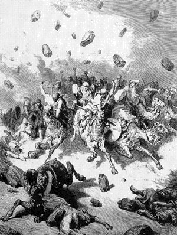
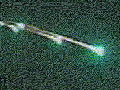

Un terme ancien et général
Cas fameux de météores
- Ensisheim en
- L'Aigle (Orne) en
- Tunguska en (à confirmer). Energie de 20
mégatonnes de TNT. La théorie du météore énorme, explosant en altitude (pas de cratère trouvé, 60 millions
d'arbres soufflés), reste encore à confirmer.
- Bodaïbo (Sibérie orientale) en . Spécimen en fer de 15,9 kg.
- Boguslava en
- Pervomaisky en
- Sikohoté-Alinsk (Yacoutie, Sibérie) en . Energie de 20 kilotonnes
de TNT.
- Rovelstok (Canada) le . Energie de 0,2 kilotonne de TNT. 2
fragments récupérés pour moins de 1 gramme après 2 semaines de recherche.
- Le à Peoria (Illinois) où on prend un cliché d'un météore se fragmentant dans le ciel, permettant
d'expliquer les observations de plusieurs pilotes dans la région décrivant un
escadron d'ovnis
Klass, P. J.: "Were Kenneth Arnold's UFOs Actually Meteor-Fireballs?", Skeptics' UFO Newsletter #46, 1997-07.
- Parc National de Grand Teton (USA/Canada) le
- Oust-Ilimsk (Sibérie) en
- Sud-ouest de la France le
- Peekskill (New York) le , filmé et dont un des fragment à
fini sa chute à travers le coffre d'une voiture.
- Lac gelé de Tagish (Alaska) le , repérée par des satellites
militaires. Energie de 0,26 kilo-tonnes de TNT. Laisse 1 kg de fragments.
- Bodaïbo (Sibérie orientale), près de Vitimski et Mama, le .
Energie de 0,2 kilo-tonnes de TNT. Supposé avoir explosé à quelques dizaines de km d'altitude. Les appareils
sismiques de la station de Bodaïbo n'enregistrent rien d'anormal, pas plus que le réseau très sensible du
laboratoire de géophysique du CEA.
À l'origine, le terme grec meteoros (μετέωρος) ou
meteôra désigne une chose haut dans les airs
, et regroupe donc tout phénomène intervenant dans la
région sublunaire (à l'exception des nuages) Aristote : Meteorologica < Deliyannis, Yannis : "1615, October 26th : Paris - A
sceptical point of view", Magonia
Exchange, mercredi 14 novembre 2007, et donc dans notre atmosphère.
Les divers phénomènes observés sont alors regroupés en de multiples catégories de météores :
- Aériens : vents, tornades et tourbillons Orly: "Recherches
sur les phénomènes météorologiques de la Lorraine", 1805, p. 18
- Lumineux : effets d'optique (arc-en-ciels, halos, fata
morgana) et aurores
- Flamboyants : foudre, étoiles filantes, comètes
- Aqueux (ou marins ?) : neige, grêle, pluie, rosée
- Astronomiques : halos, parhélies, parasélène,
extrêêet queues de comètes, débris météoriques
- Electriques : Eclairs, foudre, aurores
- Ignés : Tous phénomènes qui
conduisent ou soustraient de la chaleur : ... feux souterrains
et volcaniques, feux follets, phosphorescence, et l'ascension spontanée
de gaz inflammable
.
Cette typologie, qui regroupe donc aussi à cette époque des phénomènes inexpliqués, est celle qui domine dans la
plupart des traités que l'on peut trouver au moins jusqu'à la 1ère moitié du 17ème
siècle où des études plus systématiques permettent à certans de ces phénomènes d'être progressivement
considérés de manière indépendante, comme les aurores Gassendi: 1621, les arcs-en-ciel Descarte
s, et les comètes lorsque Tycho Brahe établit en 1577 qu'elles existent hors de l'atmosphère terrestre.
Représentation populaire d'une pluie de pierres

Cette typologie des "météores" reste toutefois mentionnée jusqu'à la fin du 18ème
siècle Pierre Bertholon: De l'électricité des météores in 1787 < Deliyannis, Yannis: "1615, October 26th
: Paris - A sceptical point of view", Magonia Exchange, mercredi 14 novembre 2007 où nombre de scientifiques considèrent encore comme non fiables
les témoins qui
parlent de pierres tombées du ciel
. Pour eux, il suffit de regarder le ciel pour
voir qu'aucune pierre ne s'y trouve, e t il semble plus probable que la poignée de professeurs défendant le
phénomène se trompent, comme l'indique à l'époque John Pringle :
Et ici, je m'aventurerais à affirmer, que, après avoir parcouru tous les récits que j'ai pu trouver de ces
phénomènes, je n'ai rencontré aucun cas bien garanti d'un tel événement ; non pas qu'ils soient imaginaires mais
que, si l'on considère la fréquence de ces apparitions, si ces météores sont vraiment tombés, il devrait y avoir
depuis longtemps une preuve claire de ce fait, au point de ne laisser
aucune place au doute aujourd'hui Pringle, John: "Some Remarks upon the Several Accounts of the Fiery
Meteor (Which Appeared on Sunday, the 26th of November, 1758) and upon
Other Such Bodies", Philosophical Transactions of the Royal Society, vol. 51,
Part I (1760), pp. 259-274. Citation at 272.
Par la suite au 19ème siècle de nombreuses études sont entreprises spécifiquement sur les
"météores flamboyants". Un physicien allemand cependant, Ernst F. Chladni, fort son expérience des témoignages de
par son activité d'avocat, pense décèler dans les récits des témoins la description honnête d'un phénomène réel, et
nouveau. En bon scientifique, cette intime conviction n'est cependant pas
pour lui une fin, mais le début d'un travail concrêt sur le sujet Chladni, E. F.: Uber
Feuer-Meteore, 1819, qui va faire de lui le précurseur de l'étude du sujet, avec Jean-Baptiste Biot. En 1803, après une averse exceptionnelle de météores au-dessus du
village de L'Aigle (Orne), l'Académie des Sciences délègue une commission d'enquête dirigée par ce dernier. Celle-ci
aboutit à une reconnaissance par la communauté scientifique admette l'origine "extra-terrestre" Au sens de
provenant de l'espace pour tomber sur la Terre de ces pierres Etienne 1998.
À partir de cette date l'étude des météores se développe plus sérieusement. En 1874, Camille Flammarion
note toutefois des signalements de météores étranges, car très lents. Il les appelle "bradytes" Flammarion, C. : Etudes et
Lecture sur L'Astronomie,
Tome 5, 1874, p. 143.
Une acception moderne
Bien que la définition généraliste d'un météore perdure assez tard (un ouvrage sur le vocabulaire marin et
militaire les décrit généralement en comme des phénomènes intervenant dans l'atmosphère, ou
sont dans le ciel, pour quelques circonstances particulières, et sortant de l'ordinaire
Guglielmotti Alberto, "Vocabolario Marino e Militare" (Casa Editrice Voghera, Roma, 1889 (ed. anastatic reprint, Mursia, Milano, 1987) < Conti, Nico: "Re: 1615, October 26th : Paris - A sceptical point of view", Magonia Exchange, 15 novembre 2007),
aujourd'hui les météores A ne pas confondre avec les météorites, qui sont les restes de météores tombés à terre
sont presque toujours assimilés aux "bolides", ou plus généralement les matériaux interplanétaires, le plus souvent
petits, visibles lorsqu'ils pénètrent dans notre atmosphère, formant des traînées
lumineuses (ce qu'on appelle les "étoiles filantes") en se désintègrant. En effet, à 120 km d'altitude, le
frottement avec l'air les embrase. Les roches/métaux arrivant éventuellement au sol sont alors qualifiés de pierres
météoriques, ou "météorites".
Combien ?
On estime que les météores ne ne consummant pas entièrement dans l'atmosphère produisent environ 10 t de
météorites/an et 10000 t de micrométéorites/an.
Où ?
On peut trouver des météorites partout, mais il est plus facile de les trouver dans les déserts (chauds et
froids). Dans certaines configurations montagneuses, le mouvement des glaciers permet aussi d'en récupérer de
nombreuses plus facilement.
Quand ?
Il existe 2 catégories de météores : les sporadiques, qui peuvent survenir à n'importe quel
moment (issus d'astéroïdes par exemple), et les essaims de météores survenant à des époques fixes
de l'année. Ces essaims sont engendrés par les comètes, qui croisent régulièrement l'orbite de la Terre. En
s'approchant du Soleil, la glace qu'elles contiennent s'évapore et des particules de poussière (dont le poids se
chiffre habituellement en grammes) sont attirées par notre planète et se consument par frottement dans
l'atmosphère. À ces époques, des pluies durent plusieurs nuits et il est possible d'apercevoir plus de 60 météores
en . Les périodes où la Terre croise des zones riches en amas de débris, générant de telles
observations sont (principaux) :
| Famille |
Période |
Constellation du radiant Lieu du ciel d'où semblent venir les météores par un effet de perspective
|
Commentaire |
| Début |
Maximum (à 2 jours près) |
Fin |
| Bootides (quadrantides) |
|
|
|
Bouvier |
Bleutés à traînée persistante. |
| Lyrides |
|
|
|
Lyre |
Brillants. |
| êta Aquarides |
|
|
|
Verseau |
Essaim associé à la comète de Halley. |
| Perséides |
|
|
|
Persée |
Brillants à traînées persistantes. Essaim riche, associé à la comète Swift-Tuttle.
|
| Draconides |
|
|
|
Le Dragon |
Essaim périodique, associé à la comète Giacobini-Zinner. |
| Orionides |
|
|
|
Orion |
Essaim associé à la comète de Halley. |
| Taurides Sud |
|
|
|
Taureau |
Lents, nombreux bolides. |
| Léonides
|
|
|
|
Lion |
Essaim périodiques, associé à la comète de Tempel-Tuttle. |
| Géminides |
|
|
|
Gémeaux |
Nombreux bolides. |
Combien de temps ?
Les météores sont observés très brievement (pendant quelques secondes au plus) comme une traînée de lumière
rectiligne. La plupart sont de couleur blanche ou blanc-bleu, bien que certains peuvent varier jaune rougeâtre
(les plus rougeâtres entre dans l'atmosphère avec une longue traînée) au vert brillant (probablement en raison
d'une ionisation d'oxygène).
Bolides

De plus gros objets donnent des phénomènes plus spectaculaires : les bolides qui peuvent être visibles même en
plein jour et apparaissent comme une boule de feu suivie d'une traînée lumineuse, qui peut persister bien après la
disparition du météore. L'observation de bolides peut s'accompagner d'une onde de choc et de phénomènes audibles.
Leur altitude (comme celle des météores) est élevée et ils sont donc souvent observés par des témoins se trouvant
à des emplacements très éloignés. Certaines notifications d'ovnis se sont révélées par la suite être dues à de
spectaculaires météores, montrant que les confusions sont assez fréquentes.
Météorites
Les plus gros bolides peuvent atteindre le sol sans être complètement désintégrés, ne causant de dégats matériels
ou corporels que très rarement. On parle alors de météorite. Plus de 99 % des météorites analysées proviennent
d'astéroïdes. 15 météorites lunaires et 11 météorites probablement d'origine martienne existent dans l'ensemble
des collections mondiales.
On distingue les météorites:
- sidérites ou métalliques, constituées de fer et de nickel à l'état métallique
- pierreuses ou aérolithes, essentiellement composées de silicate. C'est le groupe le plus
important, subdivisé en sous-groupes :
- les chondrites (93%), composées de chondres (petits globules). Une variante beaucoup plus rare est
l'ensemble des chondrites carbonées, contenant de nombreux composés de carbone. Certains
scientifiques pensent qu'elles pourraient provenir d'une certaine forme de vie extraterrestre, mais d'autres
pensent qu'il n'en est rien, et que ces composantes sont semblables aux molécules trouvées dans l'espace
interstellaire, dont elles dérivent probablement. Ce dernier sous-type de météorite est beaucoup plus ancien
et moins "altéré" que les autres, et nous dévoile les évènements qui se sont produits très tôt dans
l'histoire du système solaire, ou même avant sa formation ;
- les achondrites (7%), ne contenant pas de chondres
- intermédiaires ou sidérolithes, contenant du fer et des roches. En somme un mélange de 2 autres
types de météorites.
Depuis l'avènement de l'ère spatiale, on peut aussi observer des réentrées dans l'atmosphère de satellites ou de
morceaux de fusées, qui sont parfois spectaculaires.
Projets
Plusieurs projets d'observations de météores ont été mis en place :
- Harvard Meteor Project de à fournit quelques 3300 h d'observation
- Smithsonian Visual Prairie Network fournit 2500 h d'observation